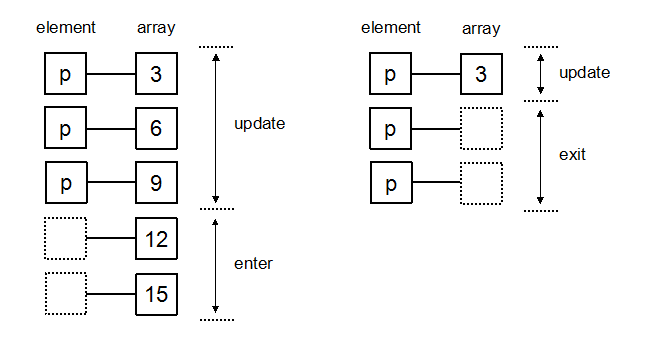

D3js 指南 、
D3js 文档 、
SVG 文档 、
SVG 手册
d3-selection API 允许强大的数据驱动文档对象模型 (DOM): 设置 attributes, styles, properties, HTML 或 text 内容等等。data join 的
enter 和
exit 选择集可以用来根据具体的数据 add 或 remove 元素。当前的 选择集或者新的 选择集，因此允许进行链式调用 。
d3.selection.datum()方法将一个数据到选择集的元素上。
d3.selection.data()方法将一个数组的各项分别绑定到选择集的各元素上(数组的各项值分别与选择集的各元素)。
data([data[, key]]) 数据绑定方法
data参数可以是任意数据类型的数组 (e.g., 数值或对象), 可以是一个返回数组的方法 (比如为每个分组继续绑定数组时[多维数组]). 当数据分配给元素时，会被存储在元素的
__data__ 属性上(可用console.log()输出在控制台查看), 因此可以在重新选中元素时继续使用与元素对应的数据。
data(data, function(item, index, arr) { return item }) 数据绑定方法 函数参数
data参数会被指定给选择集中的 each group(每个分组) 。如果选择集中包含多个分组(比如 d3.selectAll 后跟随 selection.selectAll)，则 data
应该应该被指定为一个函数。这个函数会为每个分组进行调用, 并依次传递当前分组的数据(d, 可能没有定义), 分组的索引 (index), 以及选择集的父节点 (nodes), 函数中 this
指向当前分组的父元素。
datum()方法和data()方法 不同的是，不会进行数据链接计算并且不影响索引, 不影响 enter 和 exit 选择集

原始数据：
1、
2、
3、
4、
5
update：更新 即修改DOM元素节点，(注：update变量名是自定义的！而且在绑定数据时默认进行了更新操作）)
当data数据的长度 等于 对应DOM元素的个数时【即data数组长度 = dom元素个数】，此时DOM不变，但内容变：新更 updat更新数据：
1、
2、
3、
4、
5
enter: 进入 即添加DOM元素节点，enter().append(dom)
当data数据的长度 大于 对应DOM元素的个数时【即data数组长度 > dom元素个数】，而data数组长度大于多出的这部分被称为：enert enter添加数据：
1、
2、
3、
4、
5
exit: 退出 即删除DOM元素节点，exit().remove()
当data数据的长度 小于 对应DOM元素的个数时【即data数组长度 < dom元素个数】，而大dom个数多出的这部分被称为：exit exit添加数据：
1、
2、
3、
4、
5
update、enter、exit 组合操作DOM
在实际应用中，由于dom元素 和 data数组 的长度是不固定的，一般都是从后端返回数据，所以不对等，而这种情况下update、enter、exit这3种情况都有可能发生！！所以就组合应用！！update更新、enter添加、exit删除 组合：
壹、
贰、
叁、
肆、
伍
注： update 和 enter 选择集根据数据的顺序返回, exit 选择集保留数据绑定之前的顺序。如果 key 函数被指定, 则选择集中的元素顺序与文档中的顺序可能不匹配, 此时需要使用
selection.order() 或 selection.sort()等方法